Справочник по Angular и React · модуль 2 · данные с сервера и ИИ-диспетчер
2.2
PocketBase: коллекции
и правила доступа
В этой главе у доски заявок появляется сервер с базой данных — PocketBase. Он запускается в Docker рядом с n8n из модуля 1. В панели администратора PocketBase создаётся коллекция заявок с теми же полями, что у RequestItem, и добавляется первая запись. Затем разобраны правила доступа: кто может читать, создавать, менять и удалять заявки. Правила проверяются запросами из консоли браузера. Код доски в этой главе не меняется: подключение доски к базе — тема главы 2.3.
- Категория
- Сервер, база данных
- Уровень
- Начальный
- Что понадобится
- Docker Desktop и папка
avtomatizaciyaсо страницы «Автоматизация» модуля 1, браузер Chrome, Edge или Яндекс Браузер - Результат
- PocketBase запущен в Docker, в коллекции
requestsпять заявок, правила доступа проверены
§1Зачем доске сервер
РазбираемсяГде хранить заявки, чтобы их видели все
В главе 1.7 заявки сохраняются в localStorage — хранилище одного браузера. Заявку, отправленную студентом с телефона, мастер ИТ-отдела на своём компьютере не увидит: у каждого браузера свой список. Чтобы все видели одни и те же заявки, их хранят на сервере — программе, к которой обращаются по сети все браузеры. Серверную часть приложения называют бэкендом, а то, что работает в браузере, — фронтендом (глава 0.1).
В поликлинике карточки пациентов лежат в регистратуре, по ящикам: в одном взрослые, в другом дети. В каждой карточке одинаковые графы. Посетитель карточку сам не берёт: он обращается в окошко, и регистратор выдаёт или принимает карточки по правилам — свою можно посмотреть, чужую нельзя. Главврач имеет ключ от всех ящиков.
Регистратор решает, глядя на человека. PocketBase проверяет каждый запрос по правилу, записанному заранее, без исключений.
PocketBase — бесплатный бэкенд в одном файле. В нём есть всё, что нужно доске:
- база данных — хранилище записей на диске сервера;
- API (Application Programming Interface — программный интерфейс) — адреса, по которым браузер читает и меняет записи запросами
fetch, как в главе 1.7; - панель администратора — сайт для настройки базы мышью;
- правила доступа — условия, кому что можно делать с записями.
Слова, которые встретятся дальше. Коллекция — набор однотипных записей, как ящик картотеки: коллекция requests — все заявки. Запись — одна заявка. Поле — графа записи: название, кабинет, статус. Суперпользователь (superuser) — администратор PocketBase, ему разрешено всё.
На схеме — кто с кем связан после этой главы.
Браузеры, PocketBase и его панель
Браузеры обращаются только к API. Каждый запрос сначала проверяется правилом коллекции, потом выполняется в базе. Суперпользователь настраивает коллекции через панель, правила на него не действуют.
Сначала PocketBase нужно запустить. Он будет работать в Docker, как n8n.
§2PocketBase в Docker
ДелаемЗапускаем PocketBase и создаём администратора
- Создайте Dockerfile
У PocketBase нет готового образа Docker от авторов, поэтому образ собирается по своему рецепту — файлу
Dockerfile. В папкеavtomatizaciyaсоздайте папкуpocketbase, в ней файлDockerfile(без расширения). Вставьте текст и сохраните.avtomatizaciya/pocketbase/Dockerfile FROM alpine:3.20 ARG PB_VERSION=0.40.6 ARG TARGETARCH RUN apk add --no-cache ca-certificates unzip wget \ && wget -q https://github.com/pocketbase/pocketbase/releases/download/v${PB_VERSION}/pocketbase_${PB_VERSION}_linux_${TARGETARCH}.zip -O /tmp/pb.zip \ && unzip /tmp/pb.zip -d /pb && rm /tmp/pb.zip EXPOSE 8090 CMD ["/pb/pocketbase", "serve", "--http=0.0.0.0:8090", "--dir=/pb/pb_data"]
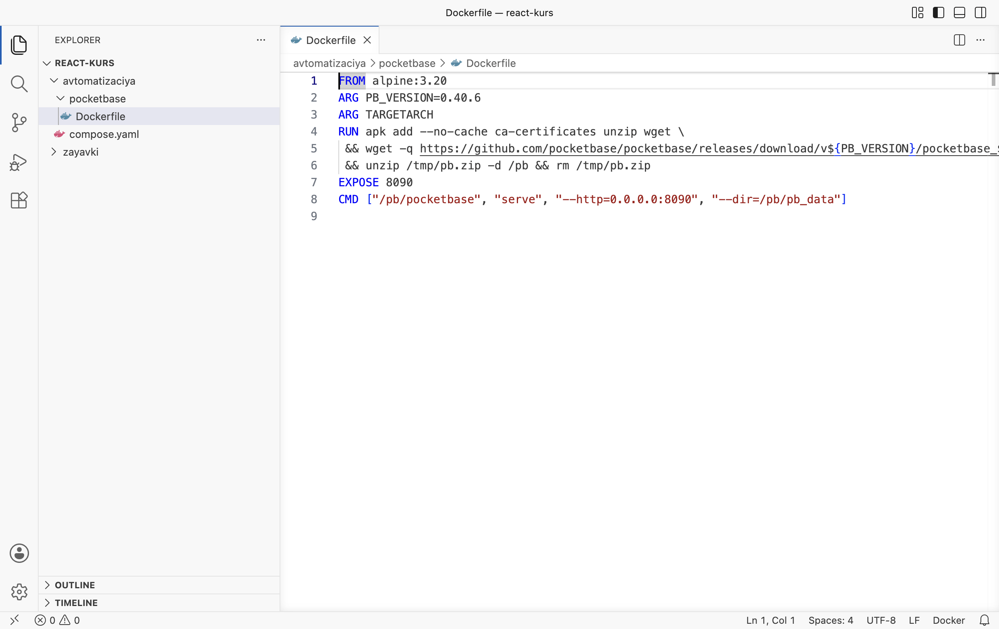
Так должна выглядеть папка: avtomatizaciya/pocketbase/Dockerfile - Добавьте PocketBase в compose.yaml
Замените содержимое
avtomatizaciya/compose.yaml. Добавленные строки подсвечены.avtomatizaciya/compose.yaml services: n8n: image: n8nio/n8n:2.45.4 ports: - "5678:5678" environment: - GENERIC_TIMEZONE=Europe/Moscow - TZ=Europe/Moscow - N8N_DEFAULT_LOCALE=en volumes: - n8n_data:/home/node/.n8n pocketbase: build: ./pocketbase ports: - "8090:8090" volumes: - pb_data:/pb/pb_data volumes: n8n_data: pb_data: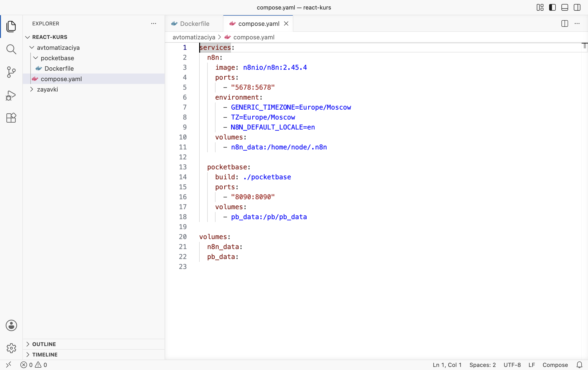
compose.yaml: службы n8n и pocketbase - Соберите и запустите
Запустите Docker Desktop. В терминале VS Code перейдите в папку и выполните команды. При первом запуске Docker скачает основу образа и сам PocketBase, это около минуты.
Терминал · папка react-kurs cd avtomatizaciya docker compose up -d --build docker compose ps
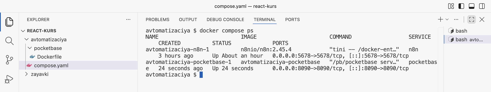
Оба контейнера работают: n8n на 5678, PocketBase на 8090 - Создайте суперпользователя
Выполните команду, подставив свои почту и пароль (пароль не короче 8 символов). Почта нужна только как имя для входа, письма на неё не приходят.
Терминал · папка avtomatizaciya docker compose exec pocketbase /pb/pocketbase superuser upsert admin@example.com Zayavki2026pb --dir=/pb/pb_data
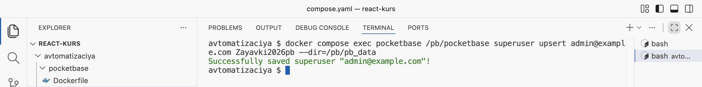
Суперпользователь создан - Войдите в панель
Откройте
http://localhost:8090/_/(в конце — подчёркивание и косая черта). Введите почту и пароль, нажмите Enter.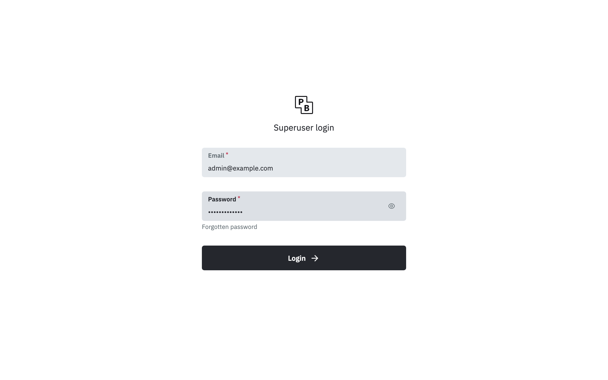
Вход в панель администратора PocketBase 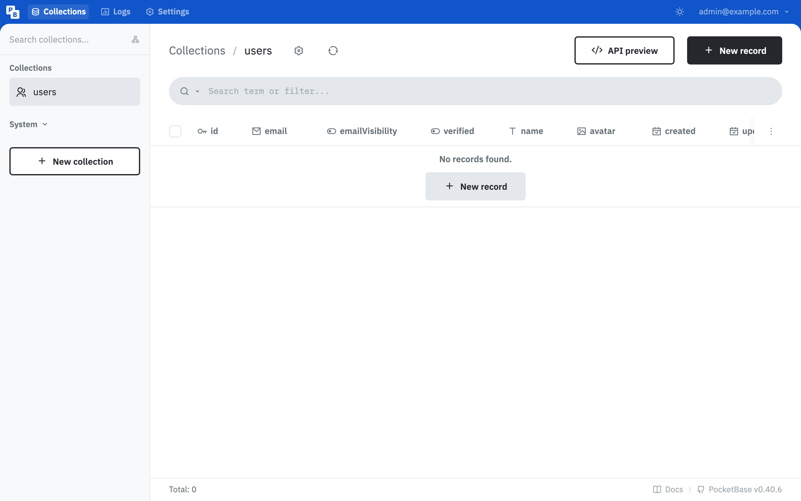
Панель: пока есть только служебная коллекция users
РазбираемсяЧто написано в Dockerfile и compose.yaml
FROM alpine:3.20 1 ARG PB_VERSION=0.40.6 2 ARG TARGETARCH 3 RUN apk add --no-cache ca-certificates unzip wget \ 4 && wget -q https://github.com/pocketbase/pocketbase/releases/download/v${PB_VERSION}/pocketbase_${PB_VERSION}_linux_${TARGETARCH}.zip -O /tmp/pb.zip \ 5 && unzip /tmp/pb.zip -d /pb && rm /tmp/pb.zip EXPOSE 8090 6 CMD ["/pb/pocketbase", "serve", "--http=0.0.0.0:8090", "--dir=/pb/pb_data"] 7
- 1
Основа образа — Alpine Linux, маленькая система (около 8 МБ). На неё ставится PocketBase.
- 2
Версия PocketBase, которую скачать. Версия закреплена, чтобы у всех студентов была одна и та же.
- 3
Тип процессора компьютера: Docker подставляет его сам —
amd64для большинства компьютеров с Windows,arm64для Mac на Apple Silicon. Поэтому один рецепт подходит для всех. - 4
RUN— команды, которые выполняются при сборке образа. Сначала ставятся программы для скачивания и распаковки. Обратная косая черта в конце строки — «команда продолжается на следующей строке». - 5
Скачать архив PocketBase нужной версии с GitHub и распаковать в папку
/pb. - 6
PocketBase слушает порт 8090.
- 7
Команда запуска:
serve— работать сервером на порту 8090;--dir=/pb/pb_data— хранить базу в папкеpb_data, которая вcompose.yamlподключена к тому.
В compose.yaml добавилась служба pocketbase. Вместо готового образа (image) у неё build: ./pocketbase — «собрать образ по Dockerfile из этой папки». Ключ --build в команде запуска пересобирает образ, если Dockerfile изменился. Том pb_data хранит базу данных: заявки переживут перезапуск контейнера. Команда docker compose exec pocketbase … выполняет программу внутри работающего контейнера — здесь сам PocketBase с командой superuser upsert: «создать суперпользователя или поменять ему пароль».
PocketBase работает. Следующий шаг — ящик картотеки для заявок.
§3Коллекция заявок
ДелаемСоздаём коллекцию requests
- Новая коллекция
Нажмите New collection. В поле Name введите
requests. Тип оставьте Base — обычная коллекция записей. - Посмотрите типы полей
Нажмите New field. Откроется список типов: текст, число, да/нет, дата, выбор из списка и другие.
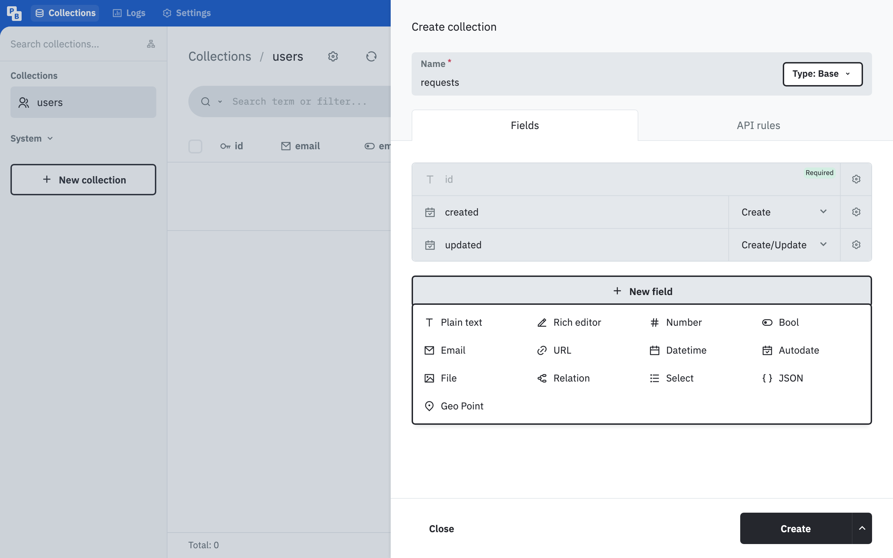
Типы полей PocketBase - Поле title
Выберите Plain text. Появится строка нового поля с выделенным именем — наберите
title. Нажмите шестерёнку справа от строки и отметьте Required: без названия заявку не сохранить. Нажмите шестерёнку ещё раз, чтобы свернуть настройки.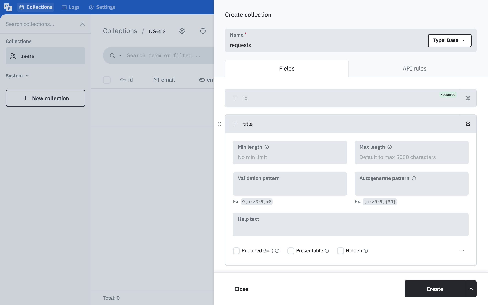
Настройки поля открываются шестерёнкой: флажок Required внизу - Остальные поля
Так же добавьте поля по таблице. У полей типа Select щёлкните по «Add choices» и введите варианты, каждый с новой строки (Enter после каждого).
Имя Тип Required Варианты titlePlain text да — roomPlain text да — categorySelect да Компьютер, Проектор, Принтер, Интернет detailsPlain text нет — statusSelect да Новая, В работе, Готово 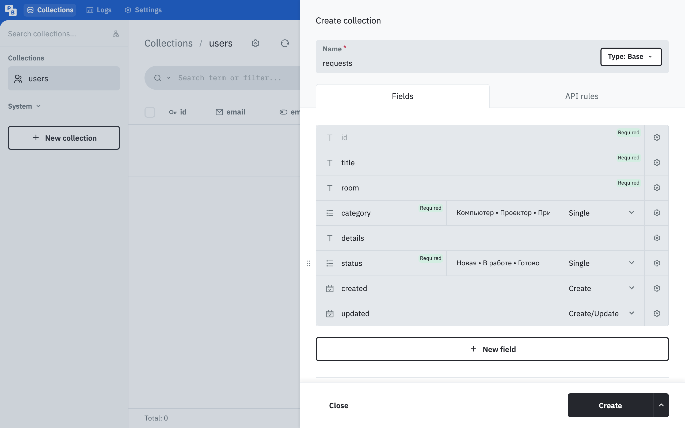
Поля коллекции перед созданием: у обязательных пометка Required - Создайте коллекцию
Нажмите Create. Внизу появится «Successfully created collection "requests"», слева в списке —
requests.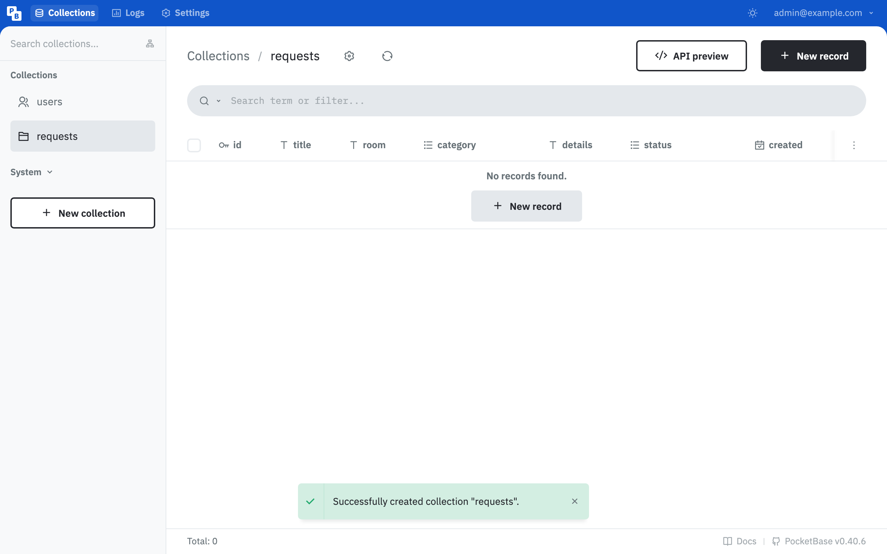
Коллекция requests пока пустая
РазбираемсяКак поля коллекции связаны с RequestItem
Поля коллекции повторяют тип RequestItem из requests.ts. Тип в TypeScript описывает заявку для доски, коллекция — для базы. Проверки похожие:
- Required — то же, что обязательное поле в типе и проверка в форме главы 1.6: пустое значение база не примет;
- Select — то же, что тип-объединение
'Новая' | 'В работе' | 'Готово': база примет только значение из списка; - id PocketBase придумывает сам, это строка из 15 символов, например
dt7udb6mjpmui08. В модуле 1 номер давалDate.now(); - created и updated — поля типа Autodate, PocketBase заполняет их временем создания и изменения записи.
Проверки в базе нужны, даже если форма доски уже проверяет поля. Запрос к API можно отправить в обход формы — из консоли браузера или другой программой, — и только база проверит его в любом случае.
Коллекция создана. Следующий шаг — первая запись.
§4Первая запись
ДелаемДобавляем заявку через панель
- Заполните форму записи
Нажмите New record. Поле id оставьте пустым. Заполните: title — «Не работает проектор», room — 214, category — «Проектор», details — «Проектор включается, но изображения на экране нет.», status — «Новая».
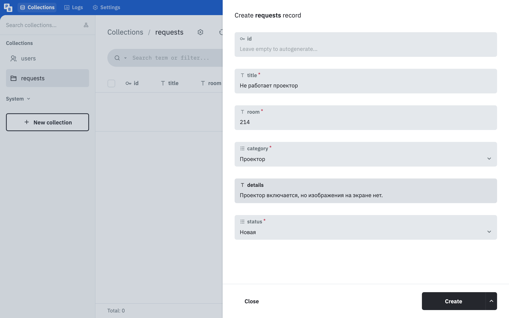
Форма записи: обязательные поля отмечены звёздочкой - Сохраните
Нажмите Create. В таблице появилась строка, PocketBase присвоил ей id.
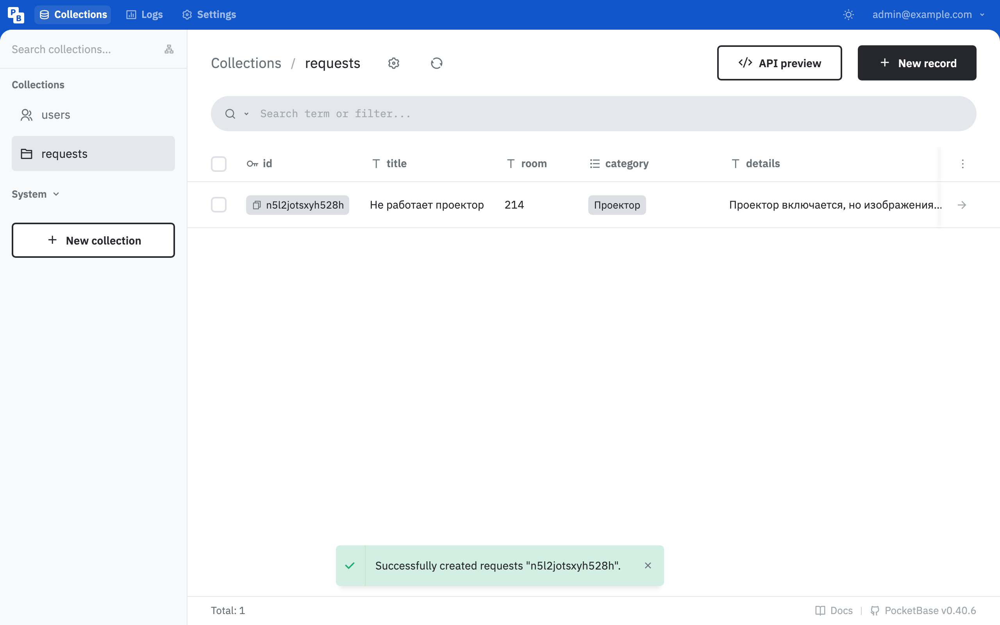
Первая запись в коллекции
Панелью пользуется администратор. Доска будет обращаться к тем же записям через API — его и правила доступа разбирает следующий раздел.
§5API и правила доступа
ДелаемОпыт: запрос к закрытой коллекции
- Откройте адрес API
В новой вкладке откройте адрес ниже. Это запрос
GET«дай список записей коллекции requests» — такой же доска отправит в главе 2.3.Адрес в браузере http://localhost:8090/api/collections/requests/records
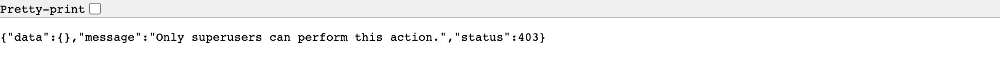
Ответ API: 403, «только суперпользователи могут это делать»
РазбираемсяПочему отказ
Код 403 означает «запрещено». У новой коллекции все пять правил закрыты: в панели они подписаны «Superusers only». Браузер на вкладке не вошёл в PocketBase, значит, он для API — посторонний, и записи ему не выдаются. Вход в панель на другой вкладке сюда не переносится: панель хранит вход для себя.
У коллекции пять правил — по одному на каждое действие:
- List/Search — получить список записей;
- View — получить одну запись по id;
- Create — создать запись;
- Update — изменить запись;
- Delete — удалить запись.
Каждое правило бывает в трёх состояниях: закрыто (замок, только суперпользователи), пусто (можно всем) или условие, которое PocketBase проверяет для каждого запроса.
ДелаемНастраиваем правила
- Откройте правила коллекции
В панели нажмите шестерёнку рядом с названием
requestsвверху и перейдите на вкладку API rules. - Откройте чтение всем
У List/Search rule и View rule нажмите замок справа — «Unlock and set custom rule». Поле останется пустым: «Leave empty to grant everyone access» — пусто значит «можно всем».
- Впишите условия
Снимите замок с трёх остальных правил и впишите условия:
Правило Условие Create rule @request.body.status = "Новая"Update rule @request.body.title:isset = false && @request.body.room:isset = false && @request.body.details:isset = falseDelete rule status = "Готово"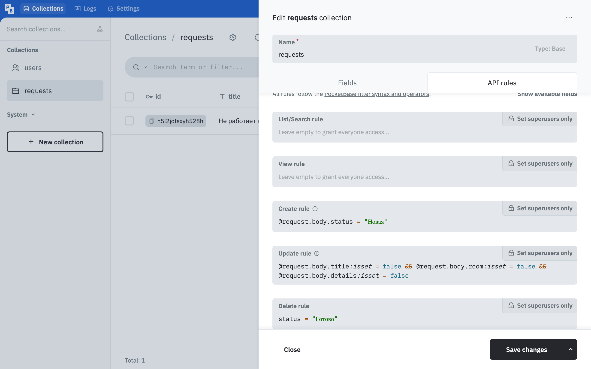
Правила коллекции requests - Сохраните
Нажмите Save changes.
- Повторите запрос к API
Обновите вкладку с адресом API. Теперь в ответе список:
itemsс первой заявкой,totalItems— 1.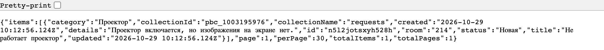
Ответ API со списком записей
РазбираемсяКак читаются условия
Условие правила записывается на языке фильтров PocketBase — похоже на сравнения в TypeScript. Знак = здесь означает «равно», как === в TypeScript. В условиях есть два источника данных:
- поля записи — как они записаны в базе сейчас:
status,title; @request.body— то, что пришло в теле запроса.
| Условие | Как читается | Зачем |
|---|---|---|
@request.body.status = "Новая" | Создать можно, только если в запросе статус «Новая» | Нельзя прислать заявку сразу «Готово» |
@request.body.title:isset = false && … | Изменить можно, только если в запросе нет полей title, room, details. :isset — «поле есть в запросе», && — «и» | Чужую заявку нельзя переписать; менять разрешено статус и категорию |
status = "Готово" | Удалить можно запись, у которой в базе статус «Готово» | Как кнопка «Убрать с доски» в главе 1.5 |
Категорию менять разрешено намеренно: в автоматизации модуля её будет определять языковая модель, а модель может ошибиться, и ошибку должно быть можно исправить. Правила пока проверяют только содержание запросов: входа для мастеров ИТ-отдела ещё нет, и любой посетитель может перевести заявку в «Готово». Вход пользователей — тема следующих модулей.
Правила записаны. Проверить их проще всего запросами из консоли браузера.
§6Проверка правил из консоли
ДелаемОтправляем запросы в обход формы
- Откройте консоль на вкладке API
На вкладке с адресом
http://localhost:8090/api/collections/requests/recordsнажмите F12 и откройте Console. При первой вставке кода Chrome предупредит, что вставлять чужой код в консоль опасно, и попросит набратьallow pasting— наберите и нажмите Enter. - Попробуйте создать готовую заявку
Вставьте код и нажмите Enter. Адрес записан без
http://localhost:8090: запрос идёт на тот же сервер, что и открытая страница.Консоль · создать заявку со статусом «Готово» await fetch('/api/collections/requests/records', { method: 'POST', headers: { 'Content-Type': 'application/json' }, body: JSON.stringify({ title: 'Проверка правил', room: '101', category: 'Компьютер', status: 'Готово' }), }).then((r) => r.json())
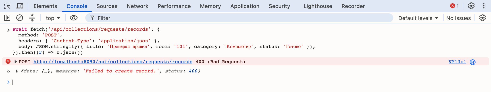
400: правило Create не пропустило статус «Готово» - Добавьте четыре заявки
Очистите консоль и выполните код ниже: он отправляет четыре заявки со статусом «Новая» — те же, что были в
initialRequests.Консоль · четыре заявки const zayavki = [ { title: 'Нет интернета', room: '305', category: 'Интернет', details: 'На всех компьютерах в кабинете не открываются сайты.' }, { title: 'Замятие бумаги в принтере', room: '112', category: 'Принтер', details: 'Принтер пишет «замятие бумаги», лоток пустой.' }, { title: 'Не включается компьютер', room: '214', category: 'Компьютер', details: 'Компьютер преподавателя не реагирует на кнопку питания.' }, { title: 'Не работает мышь', room: '118', category: 'Компьютер', details: 'Курсор не двигается, мышь подключена к компьютеру № 7.' }, ] for (const z of zayavki) { const response = await fetch('http://localhost:8090/api/collections/requests/records', { method: 'POST', headers: { 'Content-Type': 'application/json' }, body: JSON.stringify({ ...z, status: 'Новая' }), }) console.log(response.status, z.title) }
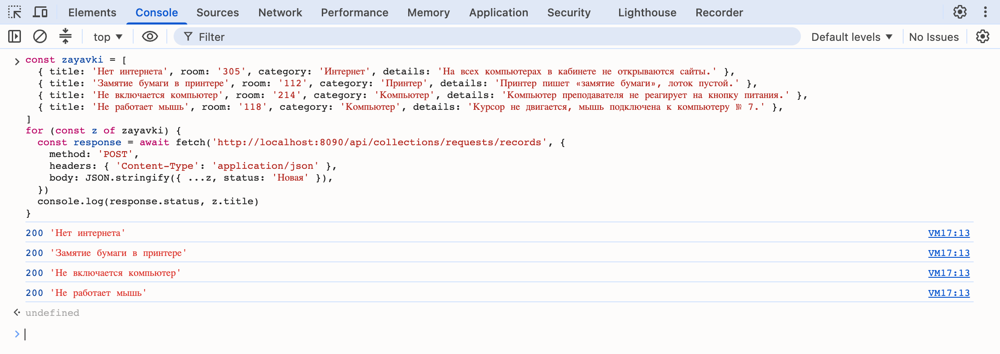
Четыре ответа 200: заявки созданы - Попробуйте изменить название
Код берёт первую заявку из списка и пытается поменять ей
title.Консоль · изменить название первой заявки const list = await fetch('/api/collections/requests/records').then((r) => r.json()) await fetch('/api/collections/requests/records/' + list.items[0].id, { method: 'PATCH', headers: { 'Content-Type': 'application/json' }, body: JSON.stringify({ title: 'Чужое название' }), }).then((r) => r.json())
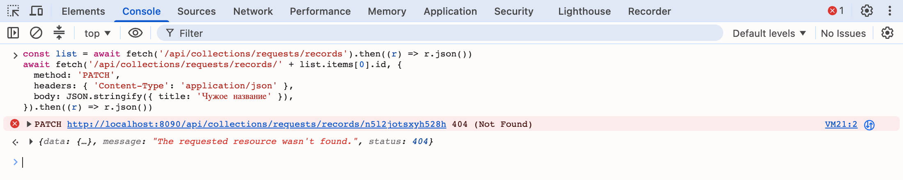
404: правило Update не пропустило изменение названия - Посмотрите коллекцию в панели
Вернитесь на вкладку панели и нажмите кнопку обновления рядом с названием коллекции. Заявок пять.
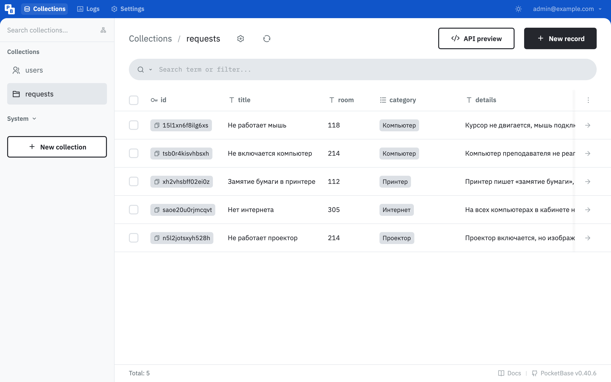
В коллекции пять заявок
РазбираемсяЧто ответил сервер
Каждый отказ пришёл с кодом и сообщением, а запись в базе не изменилась:
- 400 «Failed to create record.» — «не удалось создать запись». Правило Create не выполнено.
- 404 «The requested resource wasn't found.» — «запрошенный ресурс не найден». Запись есть, но для изменения с таким телом запроса PocketBase её «не находит»: правило Update работает как фильтр, и запись в него не попала. Так сервер не сообщает постороннему лишнего.
- 200 — запрос выполнен, в ответе созданная запись.
В коде заполнения { ...z, status: 'Новая' } — оператор расширения из главы 1.5: все поля заявки из массива плюс статус.
for (const z of zayavki) — цикл: «для каждой заявки из массива выполнить блок в фигурных скобках». await внутри цикла дожидается ответа на каждый запрос перед следующим.
§7Частые ошибки
Ответы получены от PocketBase 0.40.6 запросами к API.
| Что видно | Почему | Что сделать |
|---|---|---|
"message":"Only superusers can perform this action.","status":403 | Правило действия закрыто замком | Снять замок и оставить поле пустым или вписать условие |
"message":"Failed to create record.","status":400 с пустым data | Не выполнено условие Create rule | Проверить тело запроса: статус должен быть «Новая» |
"title":{"code":"validation_required","message":"Cannot be blank."} | Обязательное поле пустое | Заполнить поле |
"category":{"code":"validation_invalid_value","message":"Invalid value Кофемашина."} | Значения нет в вариантах поля Select | Отправить одно из значений списка; варианты сверить в настройках поля |
"message":"The requested resource wasn't found.","status":404 при изменении или удалении | Запись не подходит под Update или Delete rule, или id неверный | Проверить тело запроса и статус записи |
failed to upsert superuser account: password: Must be at least 8 character(s). | Пароль суперпользователя короче 8 символов | Придумать пароль длиннее |
В браузере «Не удаётся получить доступ к сайту» на localhost:8090 | Контейнер PocketBase не запущен | Запустить Docker Desktop, docker compose up -d в папке avtomatizaciya |
Консоль не вставляет код, просит набрать allow pasting | Защита Chrome от вставки чужого кода | Набрать allow pasting и нажать Enter |
§8Проверьте себя
Чем хранение заявок в PocketBase отличается от localStorage?
localStorage принадлежит одному браузеру на одном компьютере. PocketBase — сервер: все браузеры обращаются к одной базе и видят одни и те же заявки.
Что означают коллекция, запись и поле?
Коллекция — набор однотипных записей (все заявки). Запись — одна заявка. Поле — графа записи: название, кабинет, статус.
Зачем проверки в базе (Required, Select), если форма доски уже проверяет поля?
Запрос к API можно отправить в обход формы — из консоли или другой программы. Проверки базы срабатывают для любого запроса.
Чем пустое правило отличается от закрытого замком?
Пустое правило разрешает действие всем. Закрытое — только суперпользователям.
Что разрешает правило status = "Готово" в Delete rule?
Удалять только записи, у которых в базе статус «Готово».
Запретите в Update rule переводить заявку обратно в «Новая». Какое условие дописать?
&& @request.body.status != "Новая" — в запросе на изменение статус не может быть «Новая». != означает «не равно».
Шпаргалка
docker compose up -d --builddocker compose exec pocketbase /pb/pocketbase superuser upsert ПОЧТА ПАРОЛЬ --dir=/pb/pb_datahttp://localhost:8090/_/GET /api/collections/requests/recordsPOST /api/collections/requests/recordsPATCH, DELETE …/records/ID@request.body.status@request.body.title:issetИтог главы
PocketBase — бэкенд в одном файле: база данных, API, панель администратора и правила доступа. Он запускается в Docker по своему Dockerfile, база хранится в томе pb_data, суперпользователь создаётся командой внутри контейнера. Заявки хранятся в коллекции requests: поля повторяют тип RequestItem, Required и Select проверяют данные на сервере для любого запроса. Через API записи читают и меняют запросами GET, POST, PATCH и DELETE. У каждого действия своё правило: закрытое разрешает только суперпользователю, пустое — всем, условие проверяется для каждого запроса по полям записи и телу запроса @request.body. В коллекции пять заявок, правила не дают создать заявку сразу готовой, переписать чужую заявку и удалить незавершённую.
Источники
- pocketbase.io — Introduction
- pocketbase.io — Collections
- pocketbase.io — API rules and filters
- pocketbase.io — API Records
- docs.docker.com — Dockerfile reference
- github.com — PocketBase releases